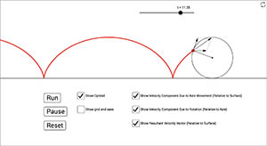
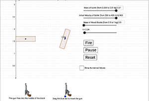

|

|
Rolling Motion Basics + Cycloids
This is a simulation of rolling motion. Students can see the cycloid shape traced out by a point on as rolling object and explore the nature of the point's velocity.
|

|
Rotation, Sliding, Rolling, and Friction
Simulation of rolling with and without slipping. Users can change the type of object (solid sphere, solid cylinder, etc.), the mass, the radius, the coefficient of friction, and the initial velocity. You can view a realistic animation of the rolling with slipping and watch as it changes to pure rolling without slipping.
|

| Rotation: Rolling Motion
In this simulation, the user can explore the rolling motion of various objects. Use the check boxes to select one or more objects. Use the mass and radius sliders to adjust the mass and radius of the object(s). Use the Incline Angle slider to adjust the angle of the incline. Use the Run, Pause, and Reset buttons to control the animation, and the speed slider to adjust the animation speed.
|

| Moment of Inertia: Rolling and Sliding Down an Incline
This is a simulation of five objects on an inclined plane. The cube slides without friction, the other objects roll without slipping. The different mass distributions cause the rolling objects to have different rotational inertia, so they roll down the incline with different accelerations.
|

| Rotational Inertia and Torque
This is a simulation of a circular object mounted on an axis through its center with a constant torque applied. Objects with varying rotational inertia (solid sphere, spherical shell, solid cylinder, cylindrical shell) can be chosen, and the mass and radius of the object can be adjusted.
|

| Rotational Inertia Lab (choice of three scenarios)
This simulation is actually three simulations in one. Students can experiment with a rotating object with various forces applied to it. They can choose a single constant force, a tension force caused by a single falling mass, or an at wood's machine type situation with two hanging masses. Many factors can be adjusted, including all masses, the radius of the rotating object, and the mass distribution of the rotating object.
|

| Equilibrium Problem: Bar Supported by Cable
This is an adjustable equilibrium problem involving a uniform bar with a mass on it. The bar has an axis at its left end and is supported at its right end by a cable. The mass of the bar and box, the length of the bar, the position of the box and the angle of the cable can all be adjusted. Use the given quantities to determine the tension in the cable. Check your free body diagram, equations, and your determined tension.
|

| Angular Momentum Collision
This is a simulation involving a ball of clay that is thrown at a thin vertical bar with an axis at its top end. The ball collides with and sticks to the bar, and the bar begins to rotate.
|
|

| Shooting Bullets Vertically Upward into Two Wood Blocks
This is a simulation of two identical guns firing bullets vertically upward into identical wood blocks. One gun fires directly into the center of mass of the wood block, the other gun can shoot anywhere into the block. So, one block rises without spinning, the other one spins as it rises. Which block will rise higher after being shot?
|

| Angular Momentum: Person on Rotating Platform
This is a simulation of a rotating solid cylindrical platform with a person on top. Adjust the mass of the platform and person, and the radius of the platform and the person's path, to see how these changes affect the angular velocity of the system and the centripetal force needed to hold the person on the platform.
|

| Angular Momentum: Rotating Disks
This is a simulation of two rotating disks, where one is dropped onto the other. Adjust the radius and height of the disks, along with their initial angular velocities. When
you hit the "Run" button, the top disk drops on to the bottom disk. The exert forces/torques on each other, and eventually reach the same final angular velocity.
Explore the changes in kinetic energy and angular momentum for the two-cylinder system.
|

| Toilet Paper Drop Lab
This is a simulation of the classic lab experiment where two rolls of toilet paper are dropped, with one rotating and one not rotating as they fall.
|

| Stability, Equilibrium, and Center of Mass
This is a simulation made to help students with the concepts of stability, equilibrium, and center of mass.
|

| Inelastic Rod-Ball Collision
In this simulation a ball with an initial velocity strikes, and sticks to, a bar that can be thought of as floating in space (no gravity effects). The bar can have either a fixed axis or no fixed axis. Explore the linear and angular momentum of the ball-bar system before and after the collision. You can adjust the masses of the ball and bar, as well as the ballʻs initial velocity and the point where the ball hits.
|
 SimuLearn: An Interactive Physics Learning Experience
SimuLearn: An Interactive Physics Learning Experience